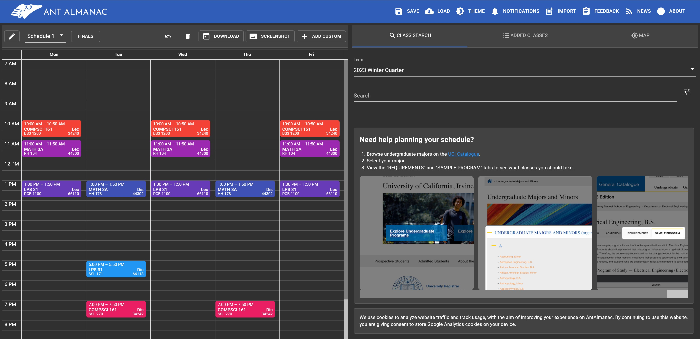
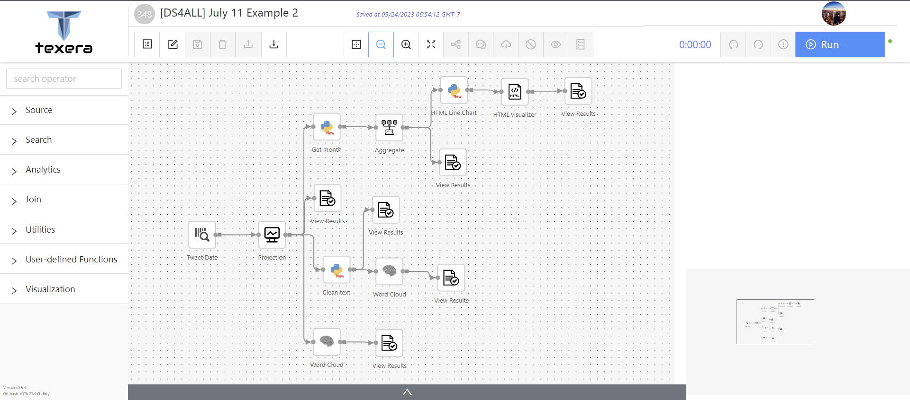
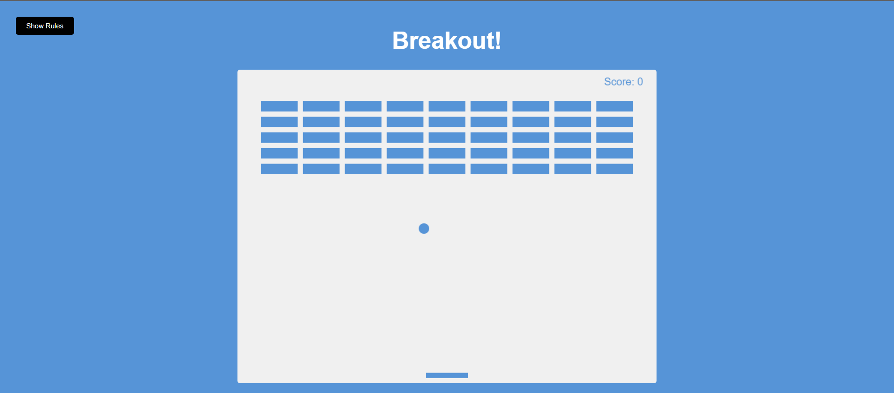

|
I am a third-year Computer Science student in the Donald Bren School of Information and Computer Sciences at University of California, Irvine. As a Software Engineer Intern at UC Irvine, I have developed a variety of data management and text analytics projects under the supervision of Prof. Chen Li. I also served as an ICS Learning Assistant, helping intermediate Python students develop a strong conceptual understanding of the subject. Throughout my academic journey, I have been involved in various projects, including Texera, a collaborative data analytics platform supporting over 4,000 users worldwide, and the development of the Global Airport App, a Python-based GUI application that parses and manages information on over 75,880 airports. I also created a Breakout game with HTML5 Canvas and JavaScript that supports real-time responsive scoring. |
|
|
- [09/2023] - I will serve as a Learning Assistant under the supervision of Prof. Shannon Alfaro, during Fall 2023
- [06/2023] - I will join Prof. Chen Li's Lab as a Software Engineer Intern, during Summer 2023.
- [05/2023] - I will serve as the Chair of Academic Committee in UCI Chinese Students and Scholars Association.
- [05/2022] - I will serve as the Vice-Chair of Academic Committee in UCI Chinese Students and Scholars Association.
- [09/2021] - I will join University of California, Irvine in 2021 Fall as a BS student in Computer Science.
|
My projects concentrate on advanced data analytics, efficient database management, and interactive game development, particularly for global user access and interactive entertainment. |
|  |
|
|  |
|
|  |
|
|
|
- Learning Assistant, Donald Bren School of Information and Computer Sciences, Fall 2023.
- Software Engineer Intern, Prof. Chen Li's Lab, Summer 2023.
- Campus Representative, UCI Office of Undergraduate Admissions, Summer 2022 - Spring 2023.
- Undergraduate Undeclared Mentor, UCI Undergraduate Undeclared Program, Spring 2021 - Spring 2022.

|
Stolen from Jon Barron |